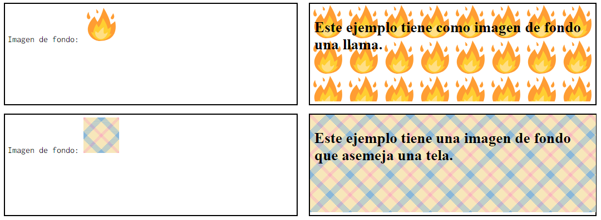
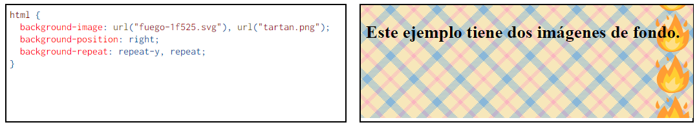

Fondos
En esta página se explican las propiedades que se pueden aplicar a los fondos de cualquier elemento
de una página web. Algunas de estas propiedades ya formaban parte de la recomendación CSS 2.1 y otras
se han introducido en la futura recomendación CSS 3: Fondos y bordes. Aunque actualmente
(diciembre de 2019) esta recomendación se encuentra en elaboración, los navegadores aceptan ya estas
propiedades, por lo que pueden utilizarse sin problemas.
Cualquier imagen puede utilizarse de imagen de fondo. Para adaptarse a los diferentes tamaños de
pantallas y mantener las imágenes lo más pequeñas posibles, si el elemento es mayor que la imagen,
las imágenes se suelen repetir. Si la imagen está bien construida, la repetición puede dar un resultado
continuo.

La propiedad compuesta background
La propiedad compuesta background permite definir simultáneamente todas las propiedades relacionadas con el fondo de cualquier elemento: background-color, background-image, background-position, background-size, background-repeat, background-attachment, background-origin y background-clip (explicadas más adelante en esta página).
Imágenes de fondo múltiples
La futura recomendación CSS 3: Fondos y bordes, actualmente (diciembre de 2019) en elaboración, permite definir varias imágenes de fondo en un mismo elemento, simplemente separando entre comas las referencias a cada imagen.
